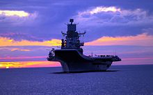
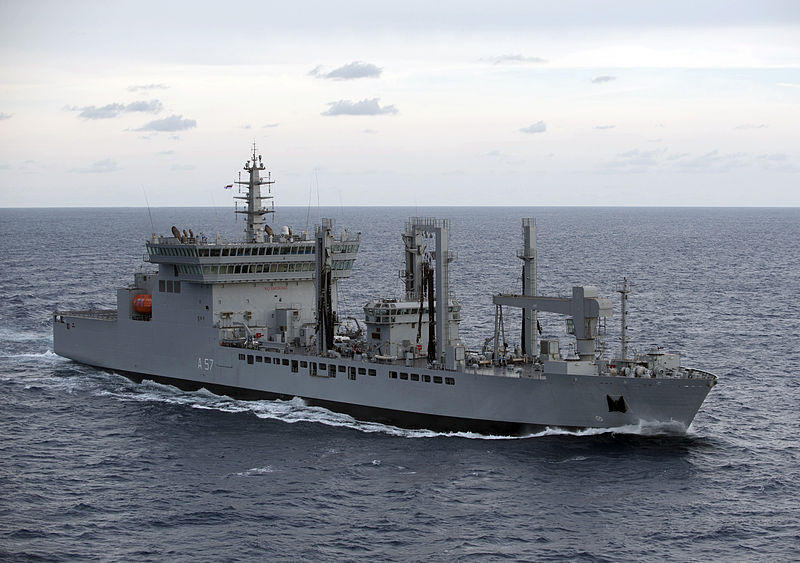
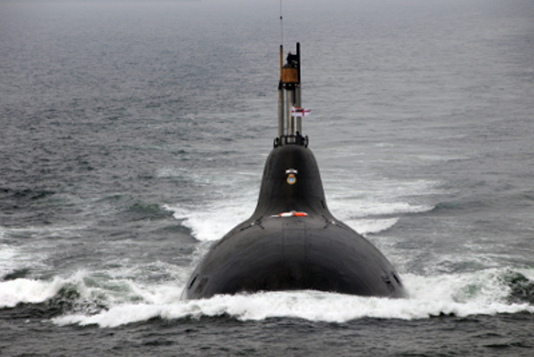
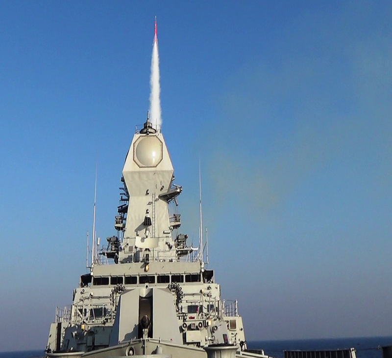

INDIAN NAVY


EQUIPMENTS
Ships
The names of all in service ships (and Naval Bases) of the Indian Navy are prefixed with
the letters INS, designating Indian Naval Ship or Indian Navy Station,[139] whereas the sail boats are prefixed
with INSV (Indian Naval Sailing Vessel). The fleet of the Indian Navy is a mixture
of domestic built and foreign vessels, as of January 2018, the surface fleet comprises
1 aircraft carrier,[141][142] 1 amphibious transport dock,[143] 8 Landing ship tanks
11 destroyers, 13 frigates,22 corvettes,
1 mine countermeasure vessels,10 large offshore patrol vessels,
4 fleet tankers, 7 Survey ships, 1 research vessel,
3 training vessels and various auxiliary vessels, Landing Craft Utility vessels, and small patrol boats.

After INS Viraat was decommissioned on 6 March 2017, the Navy is left with only one aircraft carrier
active service, INS Vikramaditya, which serves as the flagship of the fleet.
Vikramaditya (formerly Admiral Gorshkov) is a modified Kiev-class aircraft carrier procured at
a total cost $2.3 billion from Russia in December 2013.
The Navy has an amphibious transport dock of the Austin class, re-christened as INS Jalashwa in Indian service.
It also maintains a fleet of landing ship tanks..
INS Shakti, a Deepak-class fleet tanker
The navy currently operates three Kolkata, three Delhi and five Rajput-class guided-missile destroyers.
The ships of the Rajput class will be replaced in the near future by the next-generation Visakhapatnam-class
destroyers (Project 15B) which will feature a number of improvements..

In addition to destroyers, the navy operates several classes of frigates such as three Shivalik (Project 17 class)
and six Talwar-class frigates. Seven additional Shivalik-class frigates (Project 17A class frigates) are on order.
The older Godavari-class frigates will systematically be replaced one by one as the new classes of frigates
are brought into service over the next decade.
Smaller littoral zone combatants in service are in the form of corvettes, of which the Indian Navy operates
the Kamorta, Kora, Khukri, Veer and Abhay-class corvettes.[145][147][148] Replenishment tankers such as the
Jyoti-class tanker, INS Aditya and the new Deepak-class fleet tanker- help improve the navy's endurance at sea.
Submarines
As of December 2017, the Navy's sub-surface fleet includes 1 nuclear-powered attack submarine, 1 Ballistic missile submarine,
14 conventionally-powered attack submarines.[159] The conventional attack submarines of the Indian Navy consist of the Kalvari
(French Scorpène-class submarine design),
the Sindhughosh (Russian Kilo-class submarine design) and the Shishumar (German Type 209/1500 design) classes.

India also possesses a single Akula-class nuclear-powered attack submarine named INS Chakra. She is under lease to India
for a period of ten years. Three hundred Indian Navy personnel were trained in Russia for the operation of these submarines.
Negotiations are on with Russia for the lease of the second Akula-class submarine.
INS Arihant was launched on 26 July 2009 in Visakhapatnam, and was secretly commissioned into active service in August 2016.
The Navy plans to have six nuclear-powered ballistic missile submarines in service in the near future.[165] Arihant is both the
first boat of the Arihant-class nuclear-powered ballistic missile submarines and the first nuclear-powered submarine to be built in India.
Weapon systems
The Navy use a mix of indigenously developed and foreign made missile systems. These include
submarine-launched ballistic missiles, Ship Launched Ballistic Missile, cruise and anti-ship
missiles, air to air missiles, surface to air missiles, torpedoes, air to air guns, main guns and anit-submarine rocket launchers.
Its inventory comprises 100 mm (3.9 in) AK 190 gun with a range of 21.5 kilometres (13.4 mi),
130 kilometres (81 mi) KH-35E 4 Quad Uran, ASW RBU-2000 etc.

In the recent years BrahMos has been one of the most advanced missile system adapted by
the India Navy. It has been jointly developed by India's Defence Research and Development
Organisation (DRDO) and Russian NPO Mashinostroyeniya. BrahMos is the world's fastest anti-ship
cruise missile in operation.[169] The BrahMos has been tailored to meet Indian needs and features
a large proportion of India-designed components and technology, including its fire control systems,
transporter erector launchers, and its onboard navigational attack systems. The successful test of Brahmos
from INS Rajput provides Indian Navy with precision land attack capability.
India has also fitted its P-8I Neptune reconnaissance aircraft with all-weather, active-radar-homing,
over-the-horizon AGM-84L Harpoon Block II missiles and Mk 54 All-Up-Round Lightweight Torpedoes.
Indian warships' primary air-defence shield is provided by Barak 1 surface-to-air missile while an
advanced version Barak 8 is in development in collaboration with Israel.
India's next-generation Scorpène-class submarines will be armed with Exocet anti-ship missile system.
Among indigenous missiles, ship-launched version of Prithvi-II is called Dhanush, which has a range of
350 kilometres (220 mi) and can carry nuclear warheads.
The K-15 Sagarika (Oceanic) submarine-launched ballistic missile (SLBM), which has a range of at least
700 km (some sources claim 1000 km) forms part of India's nuclear triad and is extensively tested to be
integrated with the Arihant class of nuclear submarines.[174][175] A longer range submarine launched
ballistic missile called K-4 is under testing, to be followed by K-5 SLBM.
Naval Satelite
India's first exclusive defence satellite GSAT-7 was successfully launched by European
space consortium Arianespace's rocket from Kourou spaceport in French Guiana in August 2013.
GSAT-7 was fabricated by the Indian Space Research Organisation (ISRO) to
serve for at least seven years in its orbital slot at 74°E, providing UHF, S-band, C-band and
Ku-band relay capacity. Its Ku-band allows high-density data transmission, including both audio and video.
This satellite also has a provision to reach smaller and mobile terminals.
GSAT-7 approximately has a footprint of 3,500–4,000 kilometres (2,200–2,500 miles; 1,900–2,200 nautical miles
) over the Indian Ocean region, including both the Arabian Sea and the Bay of Bengal region. This enables the
Navy to operate in a network-centric atmosphere having real-time networking of all its operational assets at
sea and on land.
Copyright 2018
This Page is desighned by Amit Geed